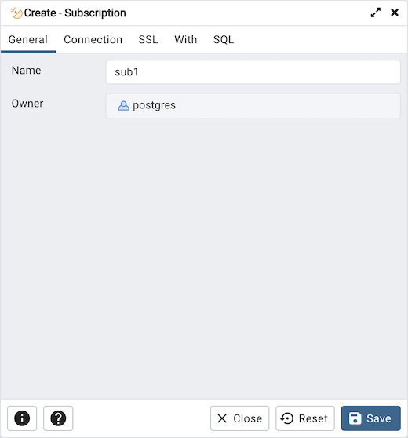
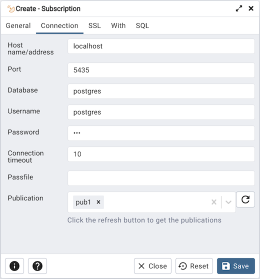
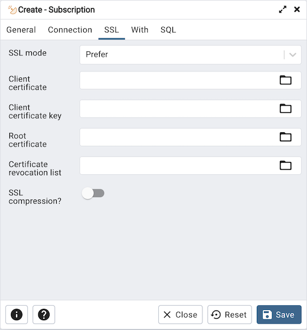
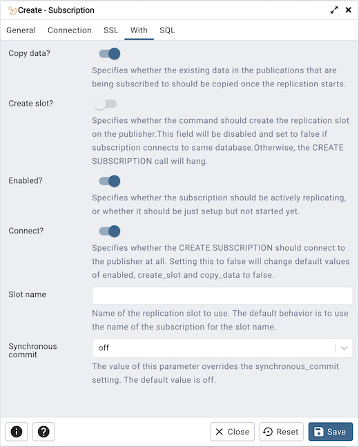
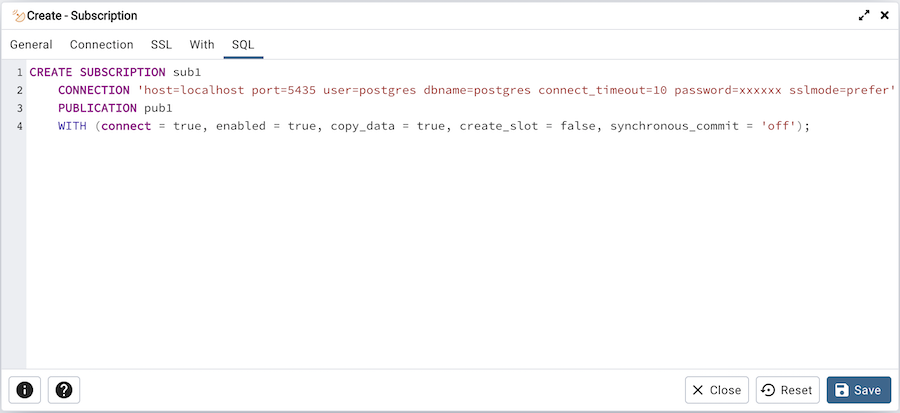

Subscription Dialog¶
Use the Subscription dialog to create a subscription. A subscription defines the connection to another database and set of publications (one or more) to which it wants to subscribe.
The subscription dialog organizes the development of a subscription through the following dialog tabs: General, Connection and With. The SQL tab displays the SQL code generated by dialog selections.
Use the fields in the General tab to identify the subscription:
Use the Name field to add a descriptive name for the subscription. The name will be displayed in the pgAdmin tree control.
The Owner field takes the name of the user automatically as current connected user. You can change the owner after creating subscription using alter subscription. Please note that owner of the subscription has superuser privileges.
Click the Connection tab to continue.
Use the Connection tab to define the connection string to the publisher:
Use the Host name/address field to provide the valid hostname or ip address of the publication.
Use the Port field to provide port number to connect at Postgres Server in which publication is residing.
Use the Username field to provide the name of the user to connect to the publication.
Use the Password to provide the password of the user.
Use the Database field to connect to the database in which publication is residing.
Use the Connection timeout field to specify the maximum wait for connection, in seconds. Zero or not specified means wait indefinetly. It is not recommended to use a timeout of less than 2 seconds.
Use the Passfile field to specify the location of a password file (.pgpass). A .pgpass file allows a user to login without providing a password when they connect. For more information, see Section 33.15 of the Postgres documentation.
Use the Publication field to specify the publication name on the publishers to subscribe to. Click on the refresh button at the end to load the names of the existing publications and then select from the list. You can also write the name of the known publication in the field.
Click the SSL tab to continue.
Use the fields in the SSL tab to configure SSL:
Use the drop-down list box in the SSL field to select the type of SSL connection the server should use. For more information about using SSL encryption, see Section 33.18 of the Postgres documentation.
If pgAdmin is installed in Server mode (the default mode), you can use the platform-specific File manager dialog to upload files that support SSL encryption to the server. To access the File manager dialog, click the icon that is located to the right of each of the following fields.
Use the Client certificate field to specify the file containing the client SSL certificate. This file will replace the default ~/.postgresql/postgresql.crt if pgAdmin is installed in Desktop mode, and <STORAGE_DIR>/<USERNAME>/.postgresql/postgresql.crt if pgAdmin is installed in Web mode. This parameter is ignored if an SSL connection is not made.
Use the Client certificate key field to specify the file containing the secret key used for the client certificate. This file will replace the default ~/.postgresql/postgresql.key if pgAdmin is installed in Desktop mode, and <STORAGE_DIR>/<USERNAME>/.postgresql/postgresql.key if pgAdmin is installed in Web mode. This parameter is ignored if an SSL connection is not made.
Use the Root certificate field to specify the file containing the SSL certificate authority. This file will replace the default ~/.postgresql/root.crt. This parameter is ignored if an SSL connection is not made.
Use the Certificate revocation list field to specify the file containing the SSL certificate revocation list. This list will replace the default list, found in ~/.postgresql/root.crl. This parameter is ignored if an SSL connection is not made.
When SSL compression? is set to True, data sent over SSL connections will be compressed. The default value is False (compression is disabled). This parameter is ignored if an SSL connection is not made.
警告
In Server mode, certificates, private keys, and the revocation list are stored in the per-user file storage area on the server, which is owned by the user account under which the pgAdmin server process is run. This means that administrators of the server may be able to access those files; appropriate caution should be taken before choosing to use this feature.
Click the With tab to continue.
Use the With tab to define some parameters for a subscription:
The Copy data? switch specifies whether the existing data in the publications that are being subscribed to should be copied once the replication starts. By default it is set to Yes.
The Create slot? switch specifies whether the command should create the replication slot on the publisher. By default it is set to Yes. Please note: if your publisher and subscriber both are inside same PostgreSQL server then is is set to No by default.
The Enabled? switch specifies whether the subscription should be actively replicating, or whether it should be just setup but not started yet. By default it is set to Yes.
The Connect? specifies whether the CREATE SUBSCRIPTION should connect to the publisher at all. By default, it is set to Yes. Setting this to No will change default values of enabled, create_slot and copy_data to No.
Use the Slot Name field to specify the name of the replication slot to use. By default, it uses the name of the subscription for the slot name.
Use the Synchronous commit field to override the synchronous_commit setting. By default, it is set to off. It is safe to use off for logical replication: If the subscriber loses transactions because of missing synchronization, the data will be sent again from the publisher.
Click the SQL tab to continue.
Your entries in the Subscription dialog generate a SQL command (see an example below). Use the SQL tab for review; revisit or switch tabs to make any changes to the SQL command.
Example
The following is an example of the sql command generated by user selections in the Subscription dialog:
The example creates a subscription named sub1 that is owned by postgres. It will replicate the data from the publication pub1.
Click the Info button (i) to access online help.
Click the Save button to save work.
Click the Close button to exit without saving work.
Click the Reset button to restore all the default settings.